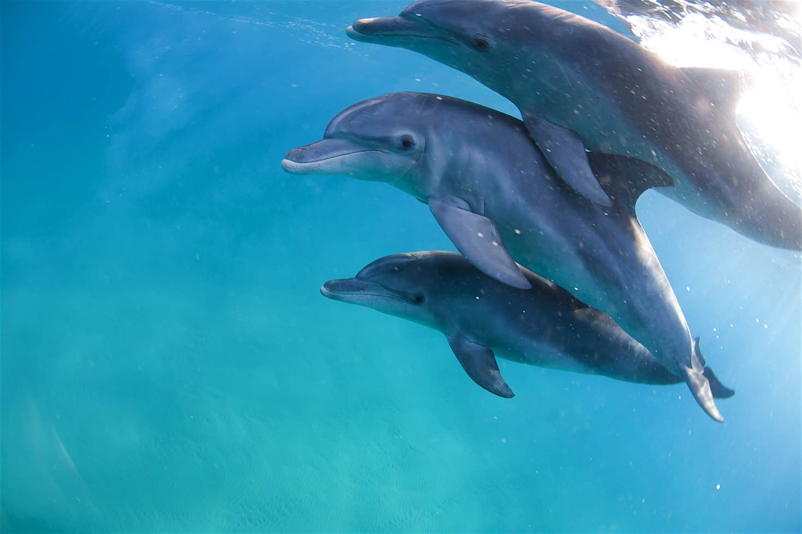
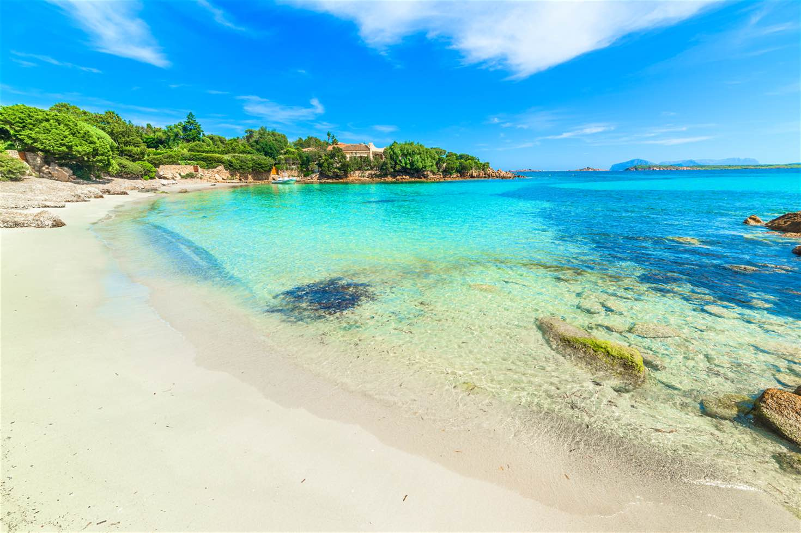
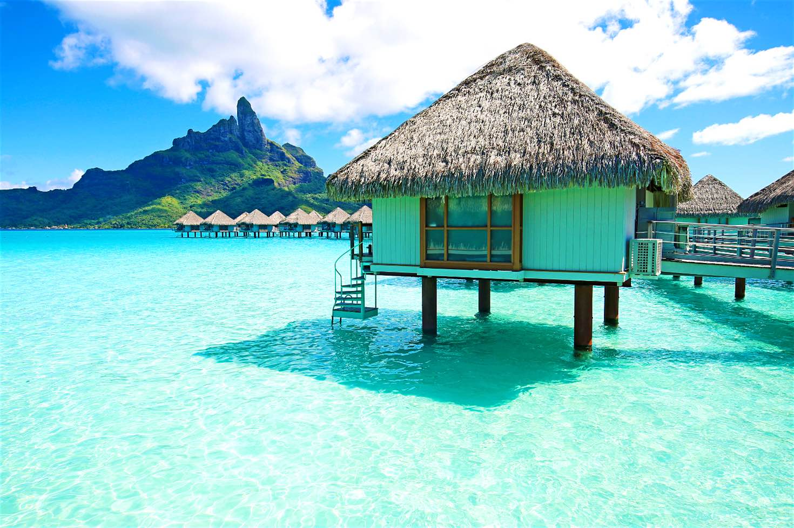

Congratulations, you’ve made it to the halfway mark of the year! Time to take a load off, kick back and relax – what do you reckon?
Thankfully June has just the ticket for some time off – from tropical escapes where you can live out your paradise-isle fantasies to Mediterranean retreats where balmy days spent sightseeing blend into quiet, crowd-free evenings by the coast.
- Soak up the Caribbean sun away from the hurricane belt
It’s the Caribbean, but not as you know it. The ABC islands, as Aruba, Bonaire and Curaçao are playfully known, sit just off the north coast of Venezuela. Although they’re geographically part of South America, they’ve been governed by, and been part of, the Netherlands since the early 17th century. June is the sweet spot between the high season (which also happens to be the rainy season) in the northern winter, and the slightly hotter summer months. Since the islands are outside the hurricane belt (unlike most of the other Caribbean islands), they’re a safe bet at this time of year, yet hotel rates are low and beaches less crowded.
And what beaches: from gorgeous Eagle Beach on Aruba, beloved of honeymooners, to the resorts of Curaçao’s southwest. Come to Aruba for nightlife, Bonaire for wonderful diving and snorkelling, and Curaçao for Dutch-influenced culture and cuisine, and to explore its colourful capital, Willemstad.

- Dive and snorkel clear, warm, turquoise waters in Mozambique
Are these the most beautiful tropical islands on Earth? The Bazaruto Archipelago faces stiff competition from other Indian Ocean destinations (and Mozambique’s own Quirimbas Archipelago) – but wriggle your toes into the silky sand on a glorious June morning (the start of the dry season), or gaze through your mask at impossibly colourful reef fish, and maybe a humpback whale migrating past, and they could stake a fair claim.
Much of this chain of five islands off Mozambique’s southeastern coast is protected as a national park, conserving dolphins, dugongs, sea turtles and around 2000 fish species. Oh, and Nile crocodiles – but perhaps you’re not so keen to see those… This is a paradise for divers, but also for anyone seeking a truly barefoot beach holiday.

- Soak in the sun and Mediterranean before the crowds hit Sardinia, Italy
Italy’s second-largest island is, fair to say, famed mostly for one key asset: beaches. Nowhere else is the Mediterranean such an incredible shade of jade-turquoise-azure, lined with such perfect white-sand beaches. Best known is Costa Smeralda, the archetypal millionaire’s playground, but there are plenty more for mere mortals to enjoy. And June’s the time to enjoy them, with fine, clear weather but before the hordes of high summer descend.
Which beach? South of capital Cagliari is Chia, with not one but five fine beaches; The Sinis Peninsula has good snorkelling and Greek ruins; Alghero has popular resorts; from Cala Gonone on the east coast boats depart for secluded beaches; and the Costa Rei further south is exquisitely beautiful. If you can stir from the sand, you’ll find great hiking in the Gennargentu Mountains, historic old town centres – Cagliari included – and 3000-year-old nuraghi dwellings to discover.
